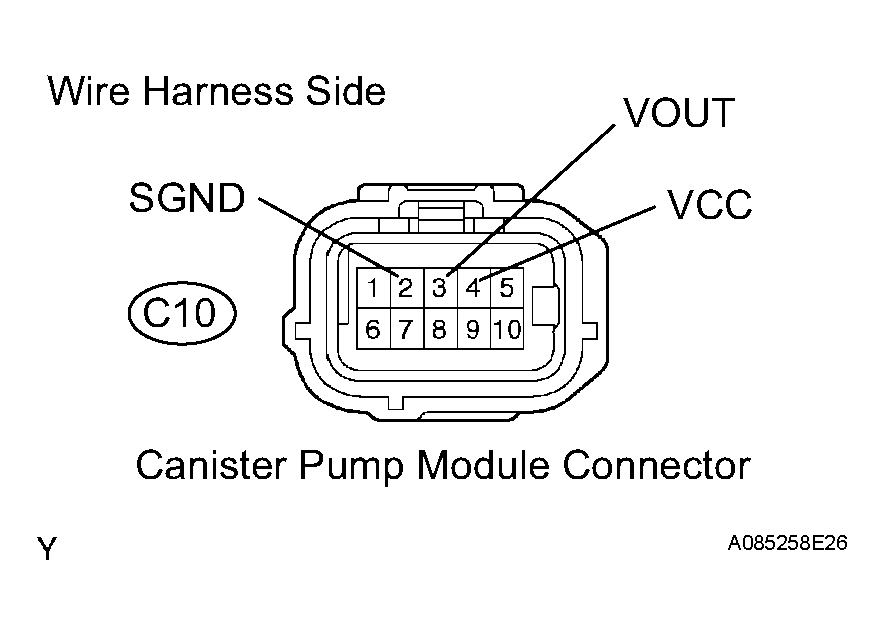

Inspection Procedure
NOTE:
- When a vehicle is brought into the workshop, leave it as it is. Do not change the vehicle condition. For example, do not tighten the fuel cap.
- Do not disassemble the canister pump module.
- The intelligent tester is required to conduct the following diagnostic troubleshooting procedure.
- CONFIRM DTC AND EVAP PRESSURE
- Connect the intelligent tester to the DLC3.
- Turn the ignition switch ON and turn the intelligent tester ON.
- Enter the following menus: DIAGNOSIS / ENHANCED OBD II / DTC INFO / CURRENT CODES.
- Read the values.
- Enter the following menus: DIAGNOSIS / ENHANCED OBD II / DATA LIST / EVAP / VAPOR PRESS.
- Read the EVAP pressure displayed on the intelligent tester.
Result
RESULTDisplay (DTC Output) Test Result Suspected Trouble Areas Proceed to P0451 - - Canister pressure sensor
A P0452 Less than 45 kPa (430 mmHg) - Wire harness/connector (ECM - canister pressure sensor)
- Canister pressure sensor
- Short in ECM circuit
B P0453 More than 120 kPa (900 mmHg) - Wire harness/connector (ECM - canister pressure sensor)
- Canister pressure sensor
- Open in ECM circuit
C
A: GO TO EVAP SYSTEM
C: Go to step 4
B: Go to Next Step
- CHECK HARNESS AND CONNECTOR (CANISTER PUMP MODULE - ECM)
- Turn the ignition switch OFF.
- Disconnect the E3 ECM connector.
- Measure the resistance between the PTMK (E3-31) terminal of the ECM connector and the body ground.
Result
RESULTTest Results Suspected Trouble Areas Proceed to 10 Ω or less - Wire harness/connector (ECM - canister pressure sensor)
- Short in canister pressure sensor circuit
A 10 kΩ or more - Wire harness/connector (ECM - canister pressure sensor)
- Short in ECM circuit
B
B: Go to step 7
A: Go to next step
- CHECK HARNESS AND CONNECTOR (CANISTER PUMP MODULE - ECM)
- Disconnect the C10 canister connector.
- Disconnect the E3 ECM connector.
- Measure the resistance between the PTMK (E3-31) terminal of the ECM connector and the body ground.Courtesy of © TOYOTA, LICENSE AGREEMENT TMS1002
Result
RESULTTest Results Suspected Trouble Areas Proceed to 10 kΩ or more - Short in canister pressure sensor circuit
A 10 kΩ or less - Short in wire harness/connector (ECM - canister pressure sensor)
B
B: Go to step 6
A: Go to next step
- CHECK HARNESS AND CONNECTOR (CANISTER PUMP MODULE - ECM)
- Disconnect the C10 canister connector.
- Turn the ignition switch ON.
- Measure the voltage and resistance of the canister pump module connector.
Standard voltage
TESTER CONNECTION - SPECIFIED CONDITIONSTester Connection Specified Condition VCC (C10-4) - Body ground 4.5 to 5.0 V VOUT (C10-3) - Body ground 4.5 to 5.0 V Standard resistance
TESTER CONNECTION - SPECIFIED CONDITIONSTester Connection Specified Condition SGND (C10-2) - Body ground 100 Ω or less 
Courtesy of © TOYOTA, LICENSE AGREEMENT TMS1002Result
RESULTTest Results Suspected Trouble Areas Proceed to Voltage and resistance within standard ranges - Open in canister pressure sensor circuit
A Voltage and resistance outside standard ranges - Open in wire harness/connector (ECM - canister pressure sensor)
B
B: Go to step 6
A: Go to next step
- REPLACE CANISTER ASSEMBLY
- Replace the canister assembly (see
REMOVAL
).NOTE: When replacing the canister, check the canister pump module interior and related pipes for water, fuel or other liquids. If liquids are present, check for disconnections and/or cracks in the following: 1) the pipe from the air inlet port to the canister pump module; 2) the canister filter; and 3) the fuel tank vent hose.
NEXT: Go to step 8
- Replace the canister assembly (see
REMOVAL
).
- REPAIR OR REPLACE HARNESS OR CONNECTOR
HINT:
If the exhaust tailpipe has been removed, go to the next step before reinstalling it.
NEXT: Go to step 8
- REPLACE ECM
- Replace the ECM (see ON-VEHICLE INSPECTION ).
NEXT: Go to step 8
- CHECK WHETHER DTC OUTPUT RECURS (AFTER REPAIR)
- Connect the intelligent tester to the DLC3.
- Turn the ignition switch ON and turn the intelligent tester ON.
- Wait for at least 60 seconds.
- Enter the following menus: DIAGNOSIS / ENHANCED OBD II / DTC INFO / PENDING CODES.
HINT:
If no pending DTC is displayed on the intelligent tester, the repair has been successfully completed.
NEXT: COMPLETED